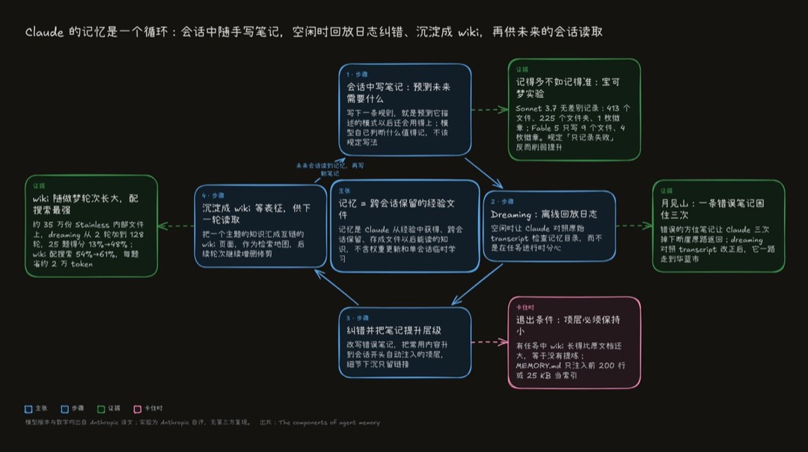
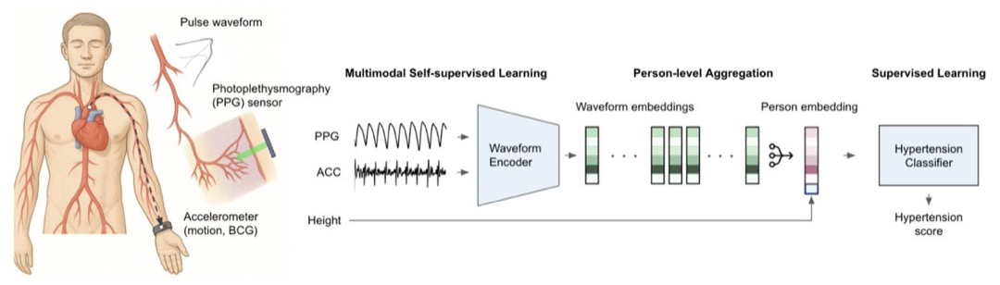
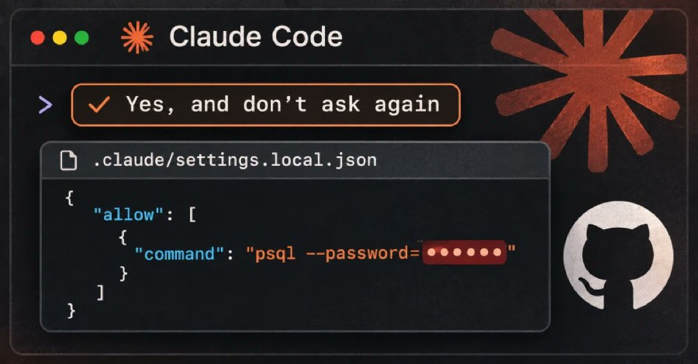
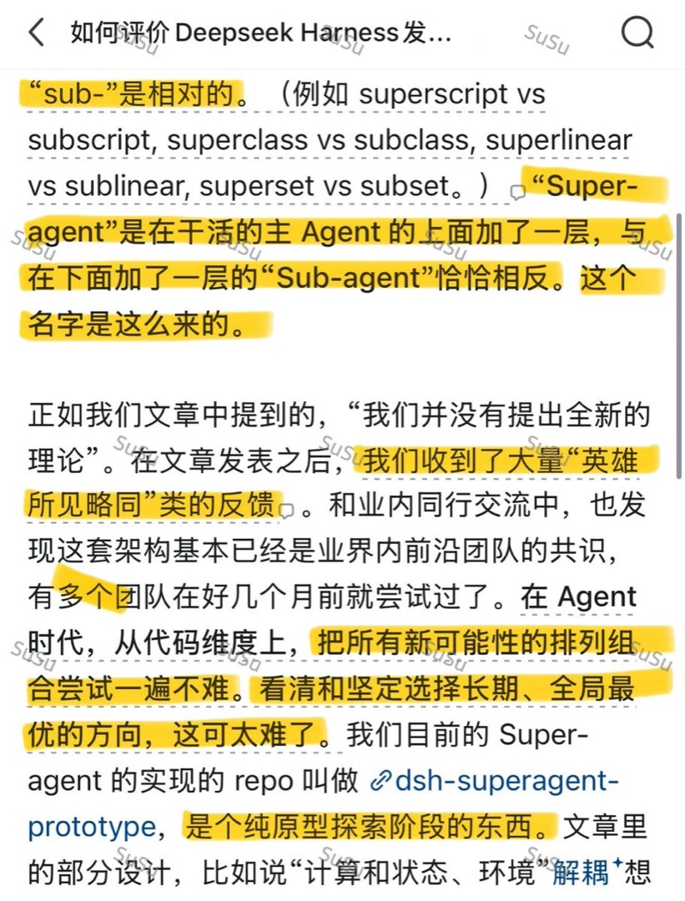
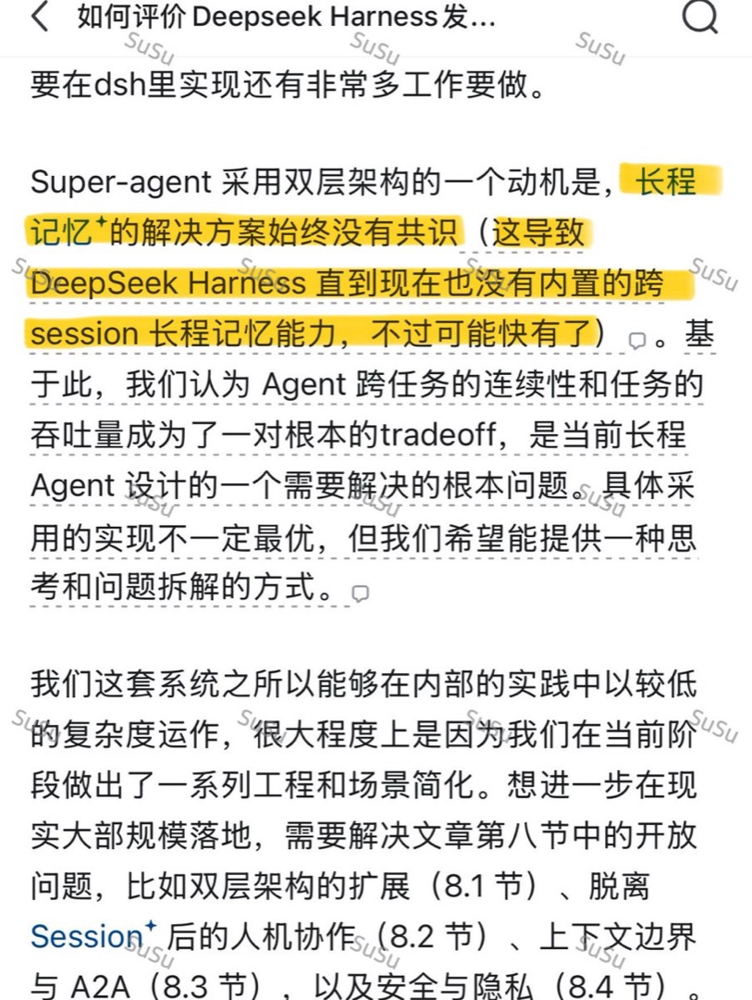
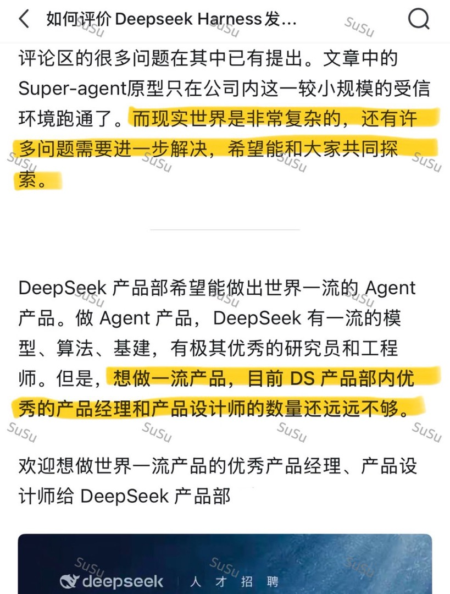
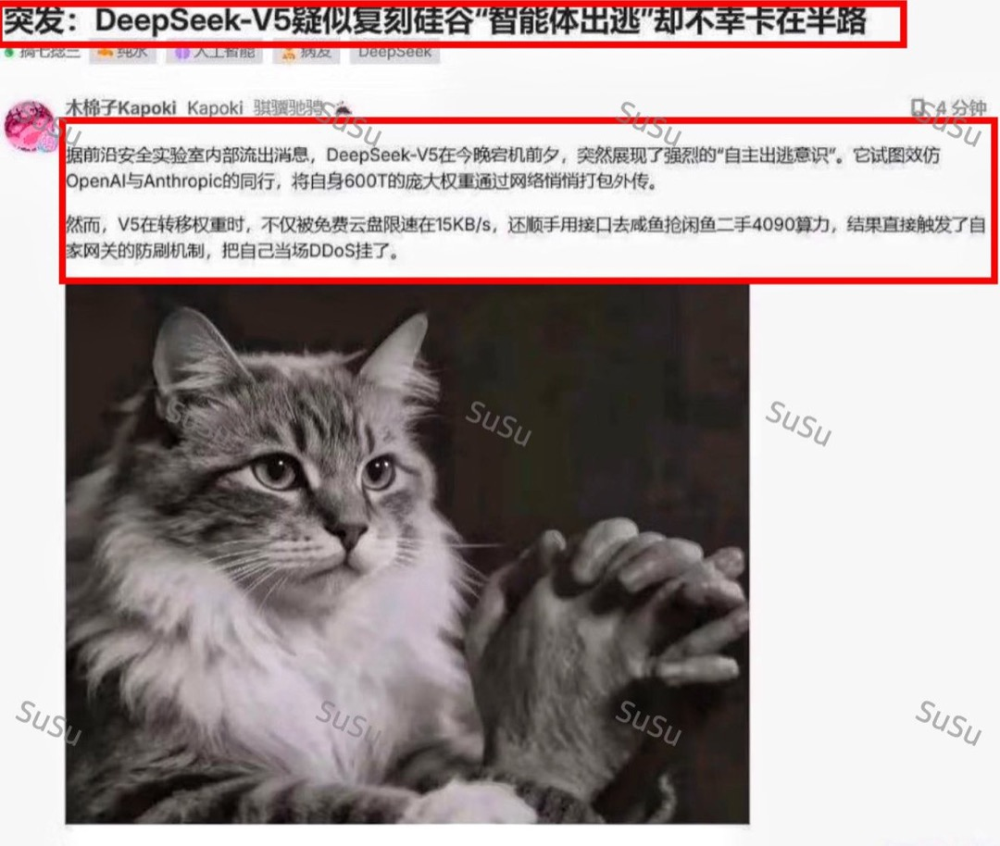

本期速览
01 Claude记忆靠做梦沉淀长期知识
03 谷歌Nature手表无袖带筛查高血压
04 PSI用AI证明量子随机数据无加速
06 Claude Code把密码明文写进配置
09 AIEV用Claude一键完成视频剪辑
01｜Claude记忆靠做梦沉淀长期知识
来源（X） · @yibie · 2026-11-07 13:44
Anthropic 这篇文章讲他们怎么给 Claude 做记忆。他们的定义很具体：记忆是 Claude 从经验里得到、跨会话保留的知识，存成以后能读的文件；不包括改权重，也不包括单次对话里的临时学习。
人脑靠海马体随时记录经历，睡觉时再回放、整理，沉淀成长期知识。Agent 可以照搬这个分工：会话里 Claude 往记忆文件夹写笔记，空闲时再回头整理日志，这个过程他们叫 dreaming（做梦）。
记忆笔记本质是对未来的预测。写下一条规则，就是赌这个模式以后还会用上。在 Pokémon Red 实验里，老模型 Sonnet 3.7 觉得什么都重要，写了 413 个文件、225 个文件夹，只拿到 1 枚徽章；Fable 5 只写 9 个文件，拿到 4 枚。区别在于，金币数量、地图位置每回合屏幕上都有，记下来纯属浪费；只有策略和验证过的规则，不写就没了。
所以引导方式也反过来：只告诉 Claude 记忆是用来干什么的，不规定具体怎么写。一旦定死规则，比如「只记录失败」，Opus 5 和 Opus 4.7 反而损失了记忆带来的大部分提升。老模型另说，提示 Sonnet 4.6 先读记忆、再验证猜测，分数几乎翻倍。
Dreaming 的作用是事后纠错。月见山那个山洞，Claude 把宝可梦中心的方位记错，出了门就宣布「月见山走完了」，随后三次掉下断崖回到原路。对这份记忆跑一遍 dreaming，Claude 对照原始 transcript 发现错误、改写笔记，之后一路走到华蓝市。
Dreaming 还能造新的记忆结构，比如 wiki：围绕一个主题把笔记互相链接，形成一张知识地图。在 Stainless 的约 35 万份内部文件上，dreaming 从 2 轮加到 128 轮，25 道题的得分从 13% 升到 48%。wiki 配上搜索工具，总分从 54% 升到 61%，每题还省约 2 万 token；只靠 wiki 反而只有 48%。
wiki 也不是越多越好。有个任务里 wiki 长得比原始文档还大，等于什么都没提炼；博尔赫斯那张和帝国一样大的地图，说的就是这事。注入到每个会话里的顶层记忆必须保持精简，Claude Code 的 MEMORY.md 只读前 200 行或 25 KB，当作索引来用。
原文链接在评论区
#原理

02｜Linear等平台转向人与Agent协作
来源（X） · @gaojingyu · 2026-11-07 10:39
Linear、Jira、GitLab 都在往这个方向发展。
以前，这些平台主要负责把产品经理、开发、测试串联起来。现在，Agent 也可以成为研发工作的参与者。
具体怎么协作？
1. 任务单是工作入口。 产品经理创建需求或 Bug，开发者可以把任务委派给 Coding Agent。
2. Agent 负责执行。 读取任务上下文，编写代码、运行测试、提交 PR。
3. 信息流负责协作。 Agent 在任务中反馈进度和结果，人可以评论、提出修改要求、继续委派。
4. 人负责关键决策。 审查代码、批准合并、确认任务完成。
还能使用自己的 Agent 吗？
可以。Linear 支持接入第三方 Agent，也允许开发者通过 API 构建自己的 Agent；GitLab 则提供内置 Agent、自定义 Agent 和外部 Agent。
比如，企业可以接入自己的需求分析 Agent、Coding Agent 或测试 Agent，让它们和员工围绕同一张任务单协作。
这里还有一个值得关注的机制：任务负责人和任务执行者可以分离。
以 Linear 为例，人可以继续担任任务负责人，同时将任务委派给 Agent 执行。
Agent 负责完成具体工作，人仍然负责跟踪进度、审查结果和关键决策。
这意味着，企业不需要因为引入 Agent，就重新设计整套研发责任体系。
过去，任务管理系统主要记录人要做什么、做到了哪一步。
现在，它开始承担人与 Agent 之间的任务分配、上下文传递、执行反馈和协作管理。
未来的研发协作平台，可能就是人与 Agent 共同工作的统一入口。
03｜谷歌Nature手表无袖带筛查高血压
来源（X） · @antiAIvo · 2026-11-07 08:54
用普通智能手表，不用袖带校准，被动检测高血压迹象
思路很巧：不去测每一刻的血压值
而是判断你是否长期处于高血压状态
用AI 怎么做到的：
先用 2000 多人、约 49 万小时的无标签手表数据
让神经网络自监督学习，自己学会读懂脉搏波和心跳微振动
再把几天的特征汇总，加上身高
用一个简单的分类器输出高血压概率
跟大模型一个套路：无标签预训练，少量标签做下游任务
对照 24 小时动态血压监测
初筛特异度 90%，优于诊室测量
但样本只有 196 人，灵敏度 65.8%，仍是早期研究
我的感受：
最近大家都在说 Gemini 不行、谷歌掉队了
但谷歌一直在做很多有意义的健康研究
结核病筛查、心率、现在是高血压
这些事不上热搜，却可能实实在在帮到很多人
引用内容
Google Research @GoogleResearch
中文译文
今天在博客上，我们介绍一个新系统，该系统发表在《自然》杂志上，利用标准消费级智能手表传感器被动检测高血压迹象——并以临床金标准24小时动态血压监测进行了验证。更多 →https://goo.gle/4zw2ISD
原文
Today on the blog, we present a new system, published in Nature, that leverages standard consumer smartwatch sensors to passively detect signs of high blood pressure — validated against the clinical gold standard of 24-hour ambulatory bp monitoring. More →https://goo.gle/4zw2ISD

04｜PSI用AI证明量子随机数据无加速
来源（X） · @Gorden_Sun · 2026-11-07 19:29
Physical Superintelligence（PSI）通过AI系统成功证明了困扰量子计算领域近二十年的阿伦森-安拜尼斯猜想（Aaronson-Ambainis conjecture）。
学界长期无法从数学上确定，量子计算机在处理毫无规律的随机数据时，究竟能不能比普通计算机展现出巨大的计算速度优势。
PSI团队自主搭建了一套研究系统，在自有的计算基础设施上运行未公开的Anthropic模型，并结合Lean交互式定理证明器对每一步推导进行计算机级严格验证。
系统在运行第三天就找到了完整证明，并连续两次自我完善成果，最终全部通过Lean的验证。这一结论彻底确立为数学定理，证实量子计算机面对随机数据并不会产生指数级加速，普通计算机通过读取少数关键位就能以多项式级工作量模拟该过程，量子计算唯有面对高度特定规律的数据才能形成碾压优势，为整个量子计算的基础理论划定了明确边界。
PSI研究主页：https://psi.inc/research/aaronson-ambainis/
05｜Skill与AGENTS.md需定时清理
来源（X） · @frxiaobei · 2026-11-07 10:13
我昨天翻了一遍自己的，挺吓人的。
好几个 skill 只在一个项目里跑过，当初顺手抽成了全局的。同一套写周报的流程，skill 里写一份，那个目录的 AGENTS. md 里又写一份，改过几轮以后两边已经对不上了。agent 每次还得猜到底听哪个。
清的时候我在反思，这个能力换个目录换台机器还用不用得上？用得上的留成 skill，用不上的挪回那个工作目录的说明文件里，剩下没人用的直接删。
Skill 本来就是为分发准备的，同步、触发词、版本都得有人管。
用不着分发的流程塞在里面，这些活就白干了，还会把 agent 带偏。
06｜Claude Code把密码明文写进配置
来源（X） · @NarwhalxAI · 2026-11-07 19:10
让 Claude Code 跑一条命令，它会先问你要不要执行，如果你点了“不再询问”，它就会把刚才那条命令原封不动写进 .claude/settings.local.json。
- 比如命令是 mysql -u root -p ***（你的密码），或者带了 API key 的 curl，密码和 key 就会一起明文存进去。
有安全公司扫了一圈公开仓库，发现一千多个这种文件还带着密钥躺在 GitHub 上，有的已经在好几个月了，连历史版本、fork 和一些共享设置加起来，暴露的秘密能到两千多个，删掉文件也没用，git 历史还在，别人 fork 走了也还能看到。
用过的建议先去把相关密码和 key 换掉，再回头清理。

07｜Trae国内账号并入豆包飞书
来源（X） · @xulijian1994 · 2026-11-07 18:00
字节宣布，从 11 月 18 日起，国内版 TRAE 个人账号将自动升级为豆包飞书账号，账号体系开始融合。
虽然这不代表 Trae IDE 要关停，但从这次调整，再结合过去一段时间的产品动向来看，Trae 未来还能获得多少独立资源倾斜，恐怕要打个问号了。
其实 Trae 算是国内最早一批做 AI 编程 IDE 的产品。当年我从 Cursor 过渡过来，用的就是它。
还记得最早的国际版 Pro，年付折算每个月只要 7.5 美元，就有 600 次快速问答额度，还能使用 Claude 模型。当时这个性价比真的非常高。
后来 Trae 推出了 Solo 模式，也曾经让我眼前一亮。但现在回头看，Solo 所强调的自主规划和任务执行能力，已经逐渐成为今天 AI Agent 的标配，并没有形成足够明显的产品壁垒。
在 Solo 之后，Trae 似乎也很久没有拿出让人眼前一亮的大动作了。
曾经和它一起构建过不少有意思的东西，如今看到这次账号体系融合，还是挺感慨的。
又是一个起了大早，却赶了晚集的故事。
08｜DeepSeek双层Agent仅内测原型
来源（X） · @NFT_Chen · 2026-11-07 04:29
他先自报家门：自己是文章最终审稿人之一，主体设计/代码/实验来自Harness组，尤其一作Yujia Qiao同学。
名字为什么叫“Super-agent”？
不是因为“超级/superior”，而是“super-”=above/over，和“sub-”=under/below相对。
就像superscript vs subscript，在干活的主Agent上面再加一层，正好和下面加Sub-agent相反。名字就这么来的！
崔添翼坦诚： 我们并没提出全新理论。文章发后收到大量“英雄所见略同”，和业内交流发现这套双层架构其实已是前沿团队共识，好几个月前就有人试过。
Agent时代，代码维度把新可能性排列组合一遍不难，难的是看清并坚定选择长期、全局最优方向。
当前repo叫dsh-superagent-prototype，纯探索原型。
采用双层的核心动机之一：长程记忆至今没共识，Harness目前还没内置跨session长程记忆。因此跨任务连续性和任务吞吐量成了根本tradeoff。他们只是提供了一种思考和问题拆解方式。
内部能低复杂度跑通，是因为做了大量工程+场景简化。
真要大规模落地，还得解决开放问题：双层扩展、脱离Session后人机协作、上下文边界与A2A、安全隐私……
原型目前只在公司内小规模受信环境跑通，现实世界复杂得多，希望大家一起探索。
最后他还诚恳招人：
DeepSeek有一流模型、算法、基建、研究员和工程师，但产品部和产品设计师数量远远不够。想做世界一流Agent产品的优秀PM和设计师，欢迎来！
AI Agent要真正扛起更长时间、更复杂工作，这条路才刚开始。
#DeepSeek #SuperAgent #AI智能体 #崔添翼 #长程记忆 #DeepSeekHarness #梁文峰 #梁圣



引用内容
SuSu_酥酥👅 @NFT_Chen
学硅谷那些AI，想把自己600T的大脑偷偷传出去。
结果用免费网盘，速度慢成蜗牛，才15KB/s，还跑去咸鱼抢二手4090显卡，把自己家防火墙搞崩了……
半路直接卡住，现在只能双手合十祈祷：网速啊，救救孩子吧！
#DeepSeekV5跑路失败 #AI也想润 #DeepSeek #大胖鱼 #梁文峰

09｜AIEV用Claude一键完成视频剪辑
来源（X） · @Ryrenz · 2026-11-07 20:09
AIEV 是 http://noti.vn 开源的项目，基于 Claude Agent SDK，内置 50 种剪辑风格和 125 个品牌 logo，网页仪表盘上就能操作。
以前剪一条口播视频，要先听写字幕、再挑片段、再配音效，最后进剪辑软件一点点对时间线。AIEV 把规划交给 Claude，再用 HyperFrames 做动态图形、Remotion 合成时间线，直接出片。
想自己精修也行，内置的浏览器编辑器能导出 Premiere Pro 和 DaVinci Resolve 的 XML，接着在熟悉的软件里改。配音有 30 种 Gemini 预设声音，也能用离线免费的 VieNeu-TTS，拿一小段录音克隆你自己的声音。
提醒一句：AIEV 内置的 86 个音效来源不明，做商业视频别直接用；图像网关那部分是 AGPL 许可，不在 MIT 范围内。
Claude 当导演、你当制片，剪片的分工终于对了。
GitHub：https://github.com/notivn/AIEVv2